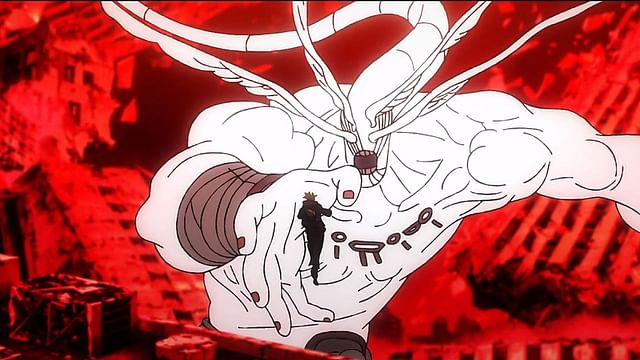

Places must visit

shibuya city
I have visited here in Dec 2023
In "Jujutsu Kaisen," Shibuya City is the setting for one of the series' most critical and intense arcs, known as the Shibuya Incident. This arc revolves around a massive conflict between Jujutsu sorcerers and powerful curses led by the antagonist, Mahito. The chaos unfolds in the bustling district of Shibuya, leading to widespread destruction and significant character developments. Key characters like Yuji Itadori, Satoru Gojo, and others face perilous battles, resulting in dramatic shifts in the series' narrative and power dynamics. The Shibuya Incident is a pivotal moment that escalates the stakes and reveals deeper layers of the overarching conflict between Jujutsu sorcerers and curses.
kyoto city
I have visited here in Oct 2023
In "Jujutsu Kaisen," Kyoto City is a crucial setting, housing the Kyoto Metropolitan Curse Technical College, one of the two primary Jujutsu schools in Japan. This school plays a significant role in training Jujutsu sorcerers and is central to the series' plot. Key events like the Kyoto Goodwill Event, a competitive exchange with Tokyo Jujutsu High, showcase the skills and dynamics of characters such as Aoi Todo, Mai Zenin, and principal Yoshinobu Gakuganji. The rivalry and cooperation between the Kyoto and Tokyo schools underscore themes of teamwork, competition, and personal growth, enriching the story's depth and world-building.
movies

love,fictional,curse
"Jujutsu Kaisen 0" is an animated film that serves as a prequel to the "Jujutsu Kaisen" series. Set in Tokyo, the story follows Yuta Okkotsu, a high school student with a tragic past involving cursed spirits. After a cursed spirit threatens his friends, Yuta seeks the help of Jujutsu Sorcerer Satoru Gojo. The film explores Yuta's journey as he grapples with his inner demons and learns to control his cursed power. Alongside familiar characters such as Gojo and Nobara Kugisaki, Yuta confronts dangerous curses and uncovers dark secrets about the Jujutsu world.

Special Powers,God Complex
In "Jujutsu Kaisen" Season 1, viewers are introduced to Yuji Itadori, a high school student with remarkable physical abilities. After a fateful encounter with Megumi Fushiguro, a Jujutsu Sorcerer, Yuji swallows a cursed object containing the powerful curse Ryomen Sukuna to save his friends. This act sets him on a path to become a Jujutsu Sorcerer and control Sukuna's power within him. Alongside his classmates Nobara Kugisaki and Megumi, Yuji trains under the guidance of his mentor, Satoru Gojo, while facing various cursed spirits and navigating the complexities of the Jujutsu world. The season culminates in intense battles, character growth, and the revelation of darker threats looming on the horizon.
Twist,Manupilation,Love & Hate
Jujutsu Kaisen Season 2 comprises two significant story arcs. The first, the Hidden Inventory/Premature Death Arc, delves into the past, focusing on teenage Satoru Gojo and Suguru Geto during their time as students at Jujutsu High in 2006. Their assignment is to protect a girl named Riko Amanai from two opposing groups: the curse user sect "Q" and the religious group "Time Vessel Association." The second arc, the Shibuya Incident Arc, takes place in 2018 and features an all-out war between Sorcerers and Curses in Shibuya on Halloween night. Sorcerers unite to rescue Gojo, who has been captured by a legendary sorcerer using Geto's body.
news
-
Bonds Beyond Bounds: Yuji Itadori's Unbreakable Friendship
In the captivating world of "Jujutsu Kaisen," Yuji Itadori's friendships transcend barriers, uniting him with a diverse array of allies, including Panda and his fellow teammates. Despite their differing origins and abilities, Yuji's unwavering loyalty and genuine empathy foster deep connections with each member. His bond with Panda, a sentient cursed corpse, symbolizes his ability to see beyond appearances, embracing individuals for who they are. Through shared trials and victories, Yuji's friendships serve as pillars of strength, reinforcing his resolve to protect those he holds dear amidst the chaos of the jujutsu world.
-
Ravaging Chaos: Environmental Devastation in the Wake of Sukuna and Mahoraga's Battle
In the tumultuous clash between Sukuna and Mahoraga within the world of "Jujutsu Kaisen," the repercussions extend far beyond mere physical combat. As their immense powers collide, the very fabric of nature suffers, with catastrophic environmental destruction echoing their fury. The earth trembles, forests are razed, and landscapes are marred by the relentless onslaught of cursed energy, leaving a stark reminder of the perilous consequences of unchecked conflict in the jujutsu realm.
Books
Gojo Saturo
"Knowledge without action is meaningless."
List of Books
JJK Volume 1
JJK Volume 1

"Jujutsu Kaisen" Volume 1 follows Yuji Itadori, a high schooler who swallows a cursed object to save his friends, becoming host to the powerful curse Ryomen Sukuna. Retaining control over his body, Yuji is recruited by sorcerer Satoru Gojo to join Tokyo Jujutsu High, where he begins his fight against curses while managing the danger of Sukuna within him.
BEST BUY LINK
JJK KVolume 2
JJK Volume 3
JJK Volume 4
JJK Volume 4

In Volume 4 of "Jujutsu Kaisen" by Gege Akutami, the story delves into the Kyoto Goodwill Event arc, where students from the Tokyo and Kyoto Jujutsu High schools compete in a friendly yet intense battle. Amidst the competition, sinister plots unfold as curses and sorcerers with hidden agendas interfere. Yuji Itadori reunites with his classmates, and they face new challenges, testing their strength and teamwork. The volume combines thrilling action, character development, and deeper insights into the jujutsu world, setting the stage for more dramatic confrontations.
BEST BUY LINK
About Me
.webp)